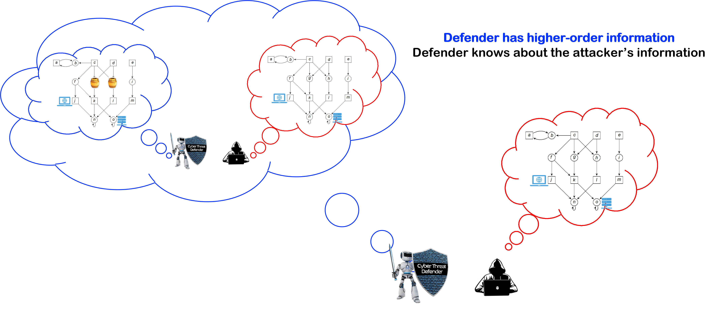
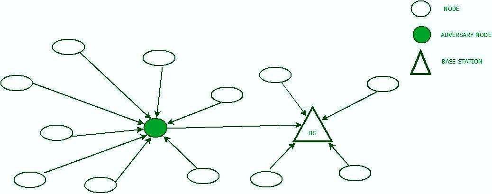

Research
I am broadly interested in formal methods and logic and game-theoretic decision making. My research goal is to design trustworthy and cognitively realistic autonomous systems that enables them to exhibit human-like behaviors such as opportunism and deception.
1. Game-theoretic Synthesis of Deceptive Strategies
|  | Central Question: In a two-player adversarial interaction with asymmetric information, how can the player with superior information gain advantage over the opponent by employing deception? Idea: In real-world, agents need the capability of making decisions with incomplete information. Incomplete information refers to situations in which the agent or its environment is unaware of the other agent's action capabilities, objectives (payoffs), the transition dynamics or the other agent's knowledge. On becoming aware of the misinformation of its opponent, the agent can leverage it to deceive the opponent and achieve a better outcome. Contributions: In my research, I have developed hypergame theory for games on graphs (a.k.a., omega-regular hypergame) to model and (qualitatively) analyze two-player adversarial interactions under various classes of incomplete information. This includes definition of various solution concepts and design of algorithms to synthesize correct-by-construction deceptive strategies from linear temporal logic (LTL) specifications. |
Publications:
Abhishek N. Kulkarni, Huan Luo, Nandi O. Leslie, Charles A. Kamhoua, Jie Fu, Deceptive Labeling: Hypergames on Graphs for Stealthy Deception, IEEE Control Systems Letters (L-CSS) 2020.
Lening Li, Haoxiang Ma, Abhishek N. Kulkarni, Jie Fu, Dynamic Hypergames for Synthesis of Deceptive Strategies with Temporal Logic Objectives., IEEE Transactions on Automation Science and Engineering (TASE).
Abhishek N. Kulkarni, Matthew Cohen and Jie Fu, Decoy Allocation Games on Graphs: Achieving Safety by Hiding the Real and Revealing the Fiction, Automatica (In preparation).
Abhishek N. Kulkarni and Jie Fu, A Theory of Hypergames on Graphs for Synthesizing Dynamic Cyber Defense with Deception, Game Theory and Machine Learning for Cyber Security, Wiley-IEEE Press 2022.
Abhishek N. Kulkarni, Jie Fu, Huan Luo, Charles A. Kamhoua, Nandi O. Leslie, Decoy Placement Games on Graphs with Temporal Logic Objectives, Conference on Decision and Game Theory for Security (GameSec) 2020.
Abhishek N. Kulkarni and Jie Fu, Synthesis of Deceptive Strategies in Reachability Games with Action Misperception, International Joint Conference on Artificial Intelligence (IJCAI) 2020.
Abhishek N. Kulkarni and Jie Fu, Opportunistic Synthesis in Reactive Games under Information Asymmetry, Conference on Decision and Control (CDC), 2019.
2. Opportunistic Planning with Incomplete Preferences over Temporal Logic Objectives
 |
Central Question: Given an incomplete (i.e., partial) preference over a set of linear temporal logic (LTL) formulas expressing temporal goals for an agent, how to synthesize a strategy that achieves the most preferred goal while reasoning about the uncertainties in the stochastic environment? Idea: An cognitively realistic autonomous system must be able to simultaneously reason about multiple objectives and achieve the best outcome. A key challenge here is to be able reason with incomplete preferences. Incomplete preferences may be a result of inescapability; wherein the agent must make a decision under time and memory constraints, or incomplete information; wherein the agent does not know the user's complete preferences, or incomparability; i.e., when the outcomes are fundamentally incomparable. Contributions: In my research, I am developing an automata-theoretic approach by defining a new language that can express preferences over linear temporal logic (LTL) objectives. I have shown that such a language has an automata-theoretic representation which can be used to synthesize strategies that are guaranteed to achieve the best outcomes under qualitative and quantitative solution concepts. An interesting consequence of preference-based planning in Markov decision processes is that agents can exhibit opportunistic behaviors. |
Publications:
Abhishek N. Kulkarni and Jie Fu, Automata-theoretic Approach to Qualitative Planning in Stochastic Systems with Preferences over Temporal Logic Objectives, To be submitted to Automatica.
Abhishek N. Kulkarni and Jie Fu, Opportunistic Qualitative Planning in Stochastic Systems with Incomplete Preferences over Reachability Objectives, IEEE American Control Conference (ACC), 2023. (Under Review)
Hazhar Rahmani, Abhishek N. Kulkarni and Jie Fu, Probabilistic Planning with Partially Ordered Preferences over Temporal GoalsIEEE International Conference on Robotics and Automation (ICRA), 2023. (Under Review)
3. Design of Resilient Cyber-Physical Systems under Sensor Attacks
|  | Central Question: How to plan qualitatively (i.e., synthesize sure, almost-sure, positive winning strategies) in two-player partially observable stochastic games (POSG) in which the adversary can attack the observation function of the first player? Contributions: In addition to incomplete information, an autonomous agent must be able to reason with imperfect information (partial observation). In this collaborative research, we are developing algorithms to synthesize a strategy using which the agent can achieve its objective even under adversarial attacks. We study two cases: when agent is unaware that it is under attack, but assumes that sensor failures are probabilistic occurrence. And, when the agent is aware of adversary's presence and capabilities. |
Publications:
Abhishek N. Kulkarni, Shuo Han, Nandi O. Leslie, Charles A. Kamhoua and Jie Fu, Qualitative Planning in Imperfect Information Games with Active Sensing and Reactive Sensor Attacks: Cost of Unawareness., IEEE Conference on Decision and Control (CDC) 2021.
Sumukha Udupa, Abhishek N. Kulkarni, Shuo Han, Nandi O. Leslie, Charles A. Kamhoua, and Jie Fu, Synthesizing Attack-Aware Control and Active Sensing Strategies under Reactive Sensor Attacks., IEEE Control System Letters (L-CSS), 2022.